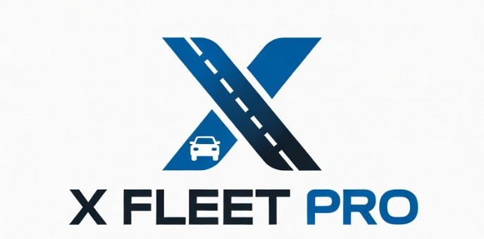

Geotab-focused fleet services
Clear Geotab data. Clear daily decisions.
X Fleet Pro helps fleets set up Geotab the right way, turn data into useful dashboards, and connect it to the tools you already use.

What we help with
Simple scope. Practical delivery. Built for people who run the fleet day to day.
- Geotab setup Devices, groups, rules, and zones configured so alerts are useful—not noisy.
- Dashboards Power BI views for safety, utilization, maintenance, and leadership check-ins.
- Integrations Connect Geotab to TMS, ERP, or CMMS so teams stop re-entering the same data.
- Ongoing support A steady review cadence as your fleet, sites, and reporting needs change.
Start with a Geotab assessment
We’ll review your current setup, flag quick wins, and share a clear 30/60/90-day plan.